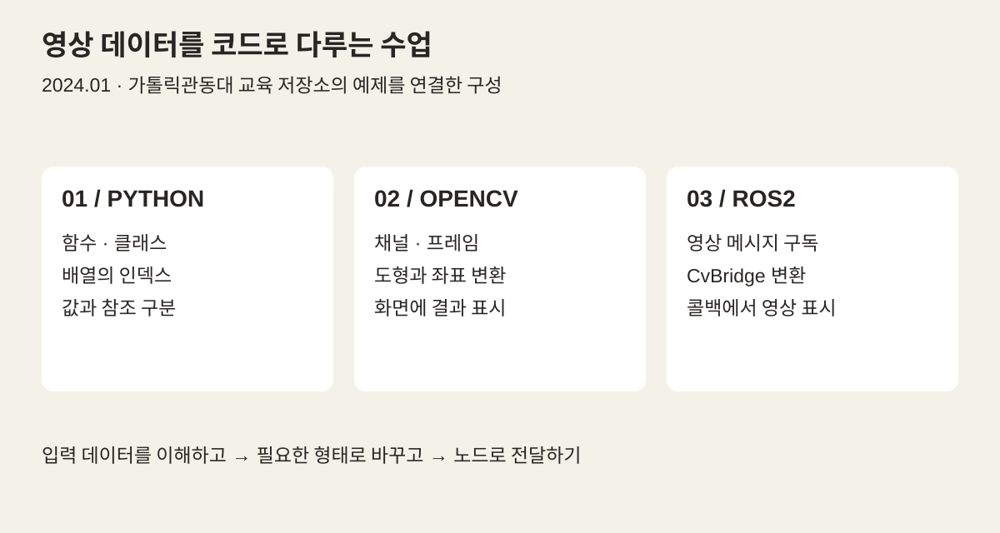
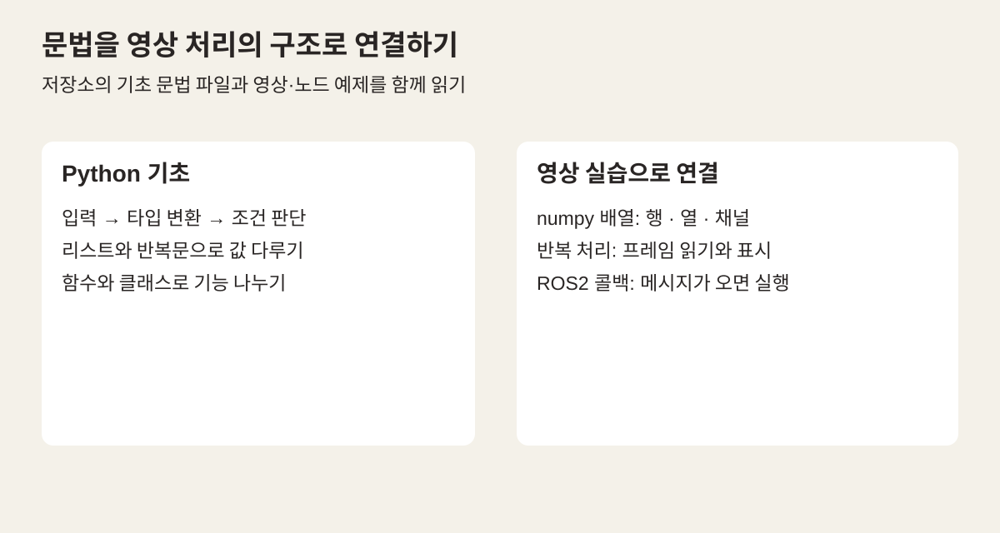
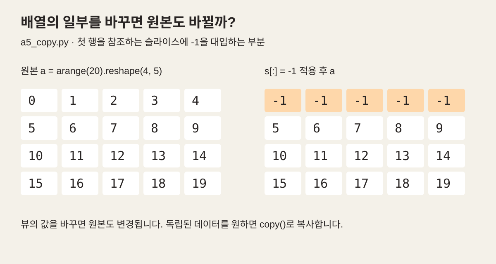
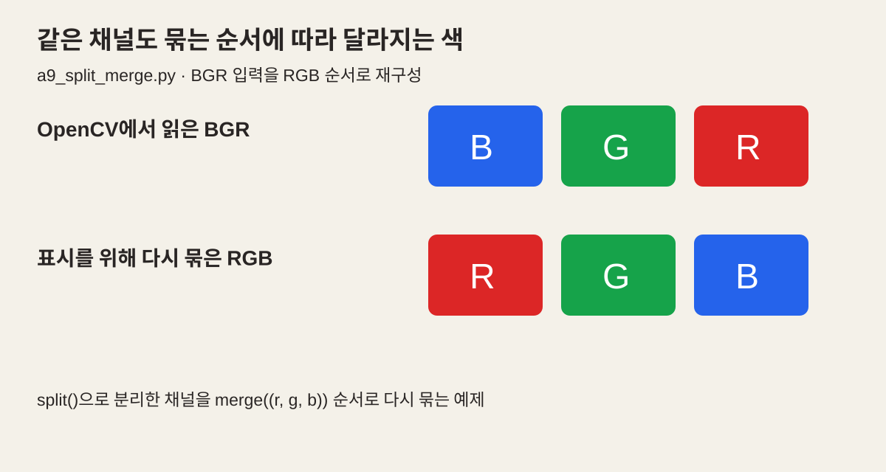
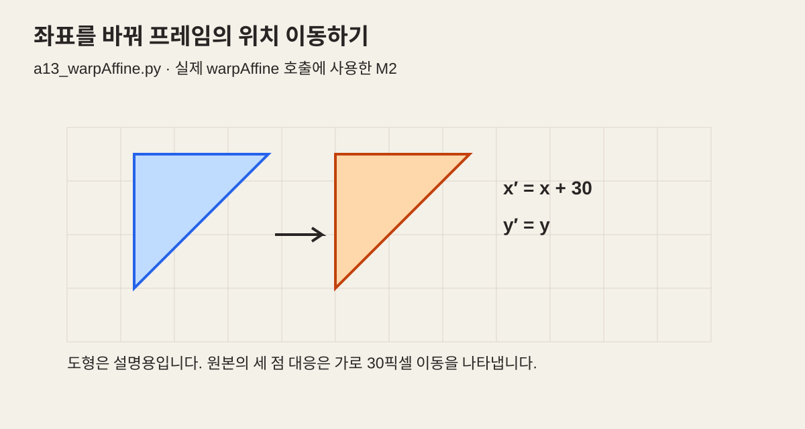
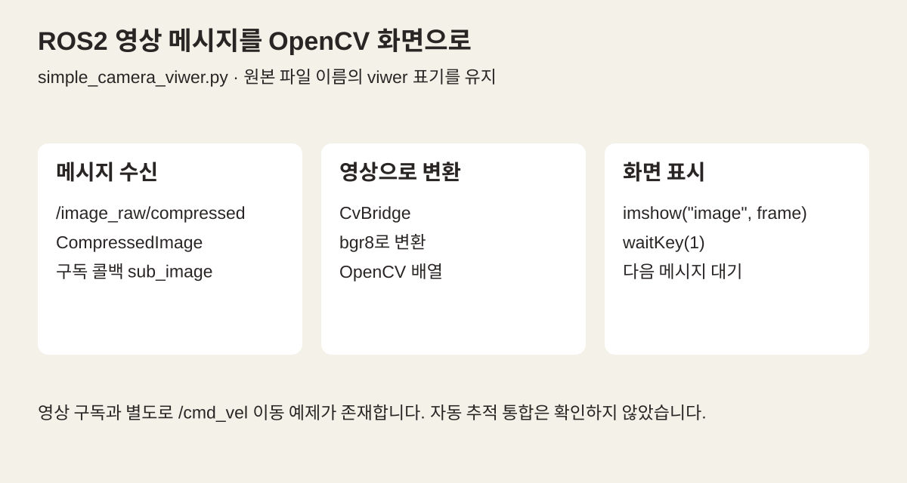

OFFLINE EDUCATION / CATHOLIC KWANDONG 2024
이미지의 숫자를 읽고,
로봇의 시각으로 연결하다
Python 배열에서 색상 채널과 좌표 변환, ROS2 카메라 구독까지. 가톨릭관동대 2024년 1월 교육의 실제 코드로 살펴보는 영상 처리 실습입니다.
한 장의 그림을
처리 가능한 데이터로 보기
화면에 보이는 이미지는 배열과 채널로 표현됩니다. 숫자의 위치와 순서를 바꾸는 일이 색상과 좌표의 변화로 나타나고, 카메라 메시지를 받는 노드 안에서도 같은 처리 방식을 사용할 수 있습니다.
공개 저장소에는 1월 15일 ROS2·OpenCV 학습 기록과 Python·영상 처리 예제가 남아 있습니다. 당시 수업안과 대조해 코드로 확인할 수 있는 내용을 다섯 주제로 정리했습니다.

크게 보기 ↗Python·OpenCV·ROS2 폴더의 실제 예제를 묶은 학습 흐름도입니다. 전체 시간표나 통합 시스템의 완성도를 나타내지는 않습니다.
- 기록의 기준
- README · 2024.01.15
고정 커밋 · 2024.01.18 - 실습의 연결
- 배열 → 채널 → 좌표
프레임 → ROS2 메시지 - 그림의 성격
- 원본 코드를 해석한 설명도
현장·실행 화면과 구분
PYTHON · OPENCV · ROS2
Python으로 데이터를 다루는 기초 만들기
저장소의 python_learning 폴더는 출력과 자료형, 인덱싱, 입력·형 변환에서 시작합니다. 조건문·리스트·반복문을 거쳐 함수·람다·클래스로 이어지며, 영상 처리 코드를 읽기 위한 언어의 기초를 마련하는 구성입니다.
영상에서 관심 있는 부분을 선택하려면 인덱스가 필요하고, 여러 프레임을 처리하려면 반복과 조건 판단이 필요합니다. 함수를 나누는 경험은 뒤의 OpenCV main 함수와 ROS2 구독 콜백을 이해하는 데도 연결됩니다.
수업안 역시 개발 환경과 Python 기초를 먼저 배치하고 뒤에 카메라·NumPy·영상 처리를 두고 있습니다. 여기서는 계획서의 모든 항목을 실시 실적으로 확장하지 않고, 저장소에 실제 예제가 남은 흐름을 중심으로 소개합니다.

크게 보기 ↗기초 문법과 뒤의 실습 구조를 연결해 재구성한 설명도입니다. 개별 예제의 처리 성능을 측정한 그림은 아닙니다.
PYTHON · OPENCV · ROS2
NumPy 배열과 복사의 차이 이해하기
NumPy 실습은 배열 생성과 범위 선택, reshape와 복사를 다룹니다. a4_slicing.py에서는 제곱수 배열의 일부를 선택하고 값을 바꾸면서 인덱스와 슬라이스의 관계를 살펴봅니다.
a5_copy.py는 같은 배열을 가리키는 대입, view, reshape, copy를 나란히 비교합니다. 슬라이스의 값을 변경했을 때 원본까지 달라지는 경우와 독립 복사본을 만드는 경우를 구분하는 예제입니다.
이미지의 일부 영역을 잘라 처리하거나 원본을 보존할 때도 이 차이가 중요합니다. 아래 그림은 예제의 첫 행을 -1로 바꾸는 부분만 숫자로 풀어 표현했습니다.

크게 보기 ↗원본 예제의 배열과 첫 행 변경을 값으로 풀어 그렸습니다. 뒤에서 수행하는 reshape·copy와 추가 변경은 이 도해에서 생략했습니다.
PYTHON · OPENCV · ROS2
이미지를 읽고 색상 채널 나누기
이미지 읽기와 저장을 거쳐 채널을 분리하고 다시 합칩니다. a9_split_merge.py는 OpenCV에서 읽은 BGR 영상을 split으로 나누고, Matplotlib에 표시할 때 RGB 순서로 다시 묶습니다. 같은 값도 채널 순서에 따라 다르게 해석된다는 점을 보여줍니다.
별도의 a12_color_space.py에는 BGR을 HSV로 바꾸고 H 채널에 범위 조건을 적용하는 실험 코드가 남아 있습니다. 다만 그 결과를 H 자리에 다시 합치는 구조이므로 일반적인 색상 마스크 적용이나 특정 물체 검출을 완성한 예제로 해석하지 않았습니다.
이 단계의 핵심은 어떤 색 공간의 어느 채널을 바꾸고 있는지 구분하는 것입니다. 원본 사진의 인물이나 교육생 화면을 재게시하는 대신, 채널의 순서를 그림으로 설명했습니다.

크게 보기 ↗원본 이미지 대신 채널 순서를 도식화했습니다. 별도 HSV 예제의 색 범위 처리와는 구분되는 BGR→RGB 재배열입니다.
PYTHON · OPENCV · ROS2
프레임에 그리고 좌표 변환하기
비디오 예제는 프레임을 읽어 화면에 표시하는 반복 구조를 사용합니다. a11_line_retangle.py는 프레임의 크기를 확인하고 선·사각형·원과 글자를 그립니다. 매 반복마다 좌표가 달라지도록 구성해 화면의 위치와 도형 함수의 관계를 살펴봅니다.
a13_warpAffine.py는 좌표 변환 행렬을 만들고 영상에 적용합니다. 회전과 이동을 합친 M1도 정의되어 있지만 실제 warpAffine 호출은 M2를 사용합니다. M2의 세 점 대응을 계산하면 가로 방향으로 30픽셀 이동하는 변환입니다.
두 예제 모두 로컬 영상 파일 경로를 사용합니다. 이번 글에서는 좌표 계산과 함수 호출을 읽어 설명했으며, 비디오 재생이나 카메라 환경을 새로 실행 검증하지는 않았습니다.

크게 보기 ↗원본의 M2는 세 점을 오른쪽으로 30픽셀 옮기는 변환입니다. 코드에 함께 정의된 회전용 M1은 실제 warpAffine 호출에 사용되지 않아 회전 결과로 소개하지 않았습니다.
PYTHON · OPENCV · ROS2
카메라 영상을 ROS2 노드로 받기
simple_camera_viwer.py는 /image_raw/compressed 토픽의 CompressedImage 메시지를 구독합니다. 콜백에서 CvBridge로 bgr8 영상으로 바꾼 뒤 OpenCV 창에 표시하는 구조입니다. 파일명의 viwer 표기는 원본 그대로 연결했습니다.
이미지 파일을 읽던 자리에서 이제 다른 노드가 보낸 영상을 받습니다. 입력 경로는 달라지지만 변환한 프레임을 배열로 다루고 화면에 표시한다는 흐름은 이어집니다.
저장소에는 /cmd_vel로 일정한 선속도·각속도를 보내는 이동 예제도 별도로 남아 있습니다. 영상의 검출 결과가 이 이동 명령을 자동 제어하는 통합 코드는 확인하지 않았으므로, 객체 추적이나 자율주행 프로젝트 완성으로 표현하지 않았습니다.

크게 보기 ↗원본 구독 코드의 토픽·메시지·변환 함수를 그대로 연결한 설명도입니다. 카메라나 로봇을 새로 구동한 실측 화면은 아닙니다.
계획과 코드가 겹치는 범위에서 소개합니다
공개 저장소의 2024년 1월 18일 커밋과 「데이터 비교과 부트캠프 수업안」을 대조했습니다. 로컬 폴더명은 ‘2023 겨울’이며 수업안 본문에도 연도 불일치가 남아 있습니다. 따라서 1월 15일 README와 코드 기록을 기준으로 월 단위로 소개하고, 계획상의 5일 전체가 그대로 실시됐다고 단정하지 않았습니다.
계획서에는 YOLO·QR 인식과 프로젝트 항목도 있으나, 이 글은 해당 기능의 완성·성과를 주장하지 않습니다. 여섯 그림은 공개 코드의 값과 흐름을 설명하기 위해 새로 구성한 도해입니다. 교육생 개인정보와 행정·비용 자료는 게시하지 않았습니다.